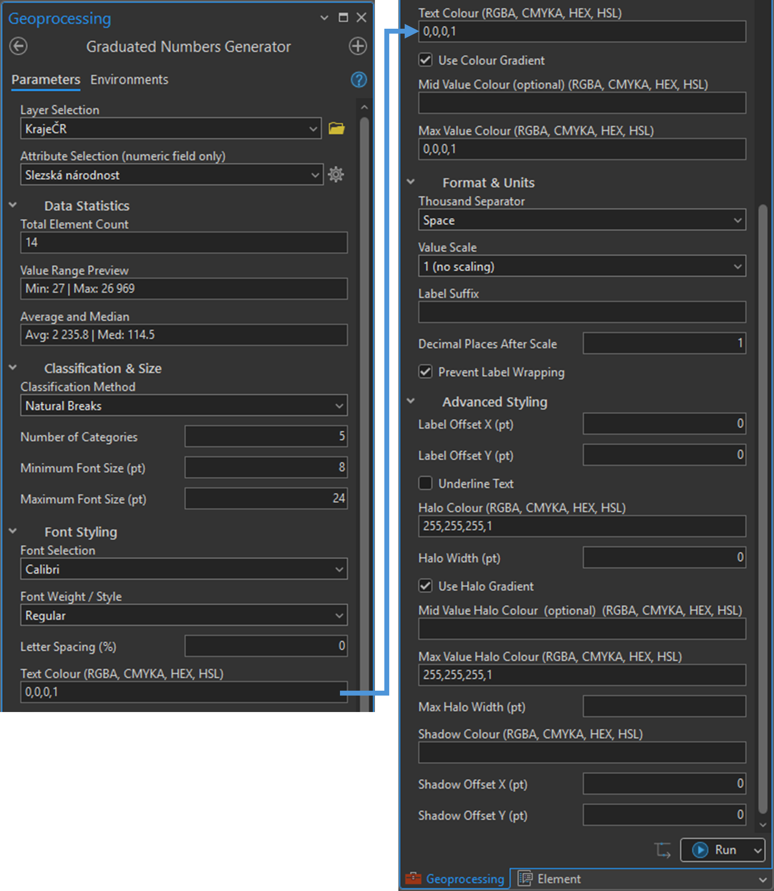

Graduated Numbers Generator
GitHub toolboxuKompletní rozhraní skriptového nástroje ve formátu .atbx. Umožňuje nastavit statistické třídění, gradaci velikosti písma, barevné přechody i formátování popisků v jediném dialogovém okně bez ručního klikání jednotlivých tříd.
